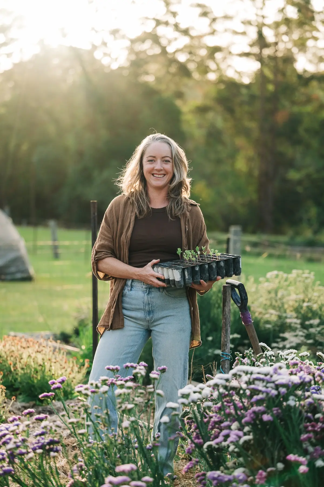
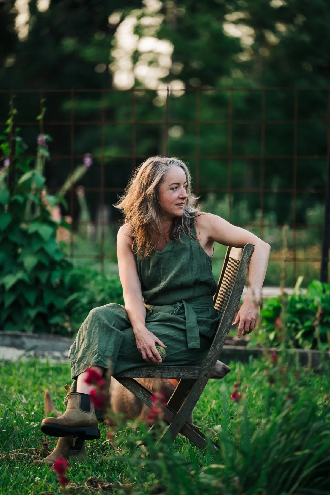

SEEDS · BIODIVERSITY
Seed diversity & sovereignty
Safeguarding heirloom varieties, the stories carried in seed and the knowledge communities need to keep food systems diverse, resilient and in their own hands.
LOWER BEECHMONT · CERTIFIED ORGANIC
Ambre Whatley is a naturopath, herbal medicine practitioner and agricultural seed steward working where biodiversity, food, medicine and community health meet.

GROWN IN PRACTICE
Growing, researching and teaching from the mountains behind the Gold Coast.
A LIFE IN PRACTICE
My work has taken many forms, but the thread is the same: bringing people back into relationship with plants, place and the knowledge held between them. Through seed stewardship, herbalism, education, writing and community work, I explore how biodiversity, practical skill, culture and collective wellbeing belong to the same living system. These things were never meant to be separate.

THE WORK
Knowledge belongs in use.
SEEDS · BIODIVERSITY
Safeguarding heirloom varieties, the stories carried in seed and the knowledge communities need to keep food systems diverse, resilient and in their own hands.
HERBALISM · COMMUNITY HEALTH
Connecting soil, food, medicinal plants and human health through naturopathic practice, herbal education and community care.
EDUCATION · ANCESTRAL SKILLS
Teaching growing, seed saving, medicine making and ancestral skills so practical knowledge remains lived, shared and accessible.
PRACTICE & EXPERIENCE
WORDS & APPEARANCES
Essays, columns, conversations and workshops.
Columns, essays and selected earlier work.
A monthly seasonal column from the garden for The Canungra Times
Field notes on seeds, plants and practical living
↗Australia’s premier luxury publication for horsewomen
Talks, panels and practical education.
Long-form conversations on seeds, growing and resilience.